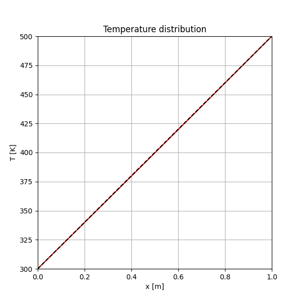
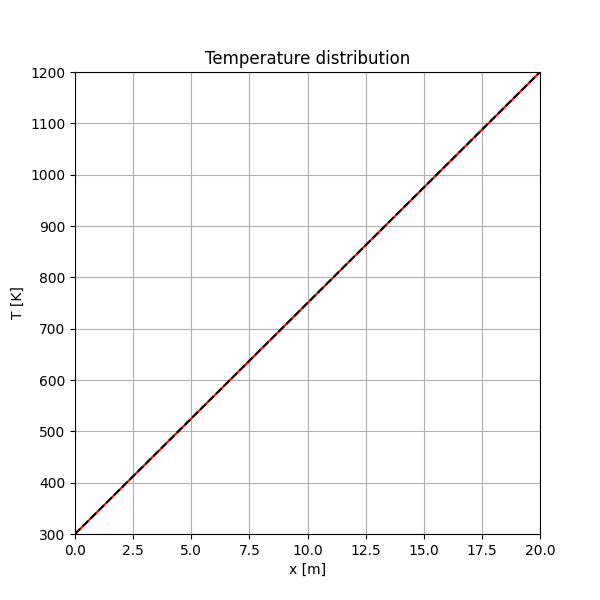
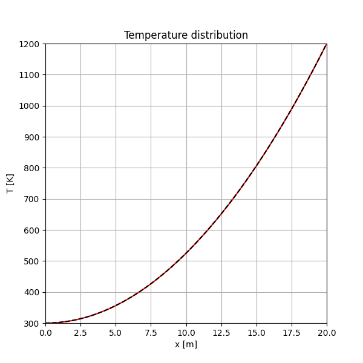
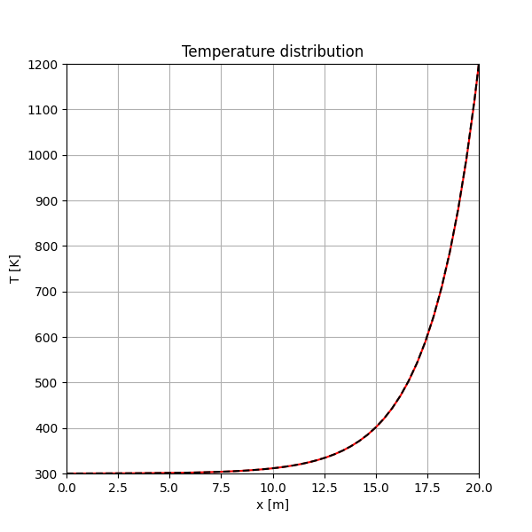

This lesson covers programs that solve the 1D steady-state heat conduction equation using the finite difference method.
1dAns.py)This program solves a simple 1D steady-state heat conduction problem with a uniform internal heat source. The numerical solution (red line) is compared with the theoretical solution (dashed black line).

1dAns.py)import numpy as np
import matplotlib.pyplot as plt
# --- (Omitted: Parameter Definitions) ---
L = 1.0
N = 20
dl = L/N
TL = 300.0
TH = 500.0
crit = 0.01
lm = 209.5
# --- (Omitted: Grid and Coefficient Setup) ---
# ... ce, cw, co are calculated here ...
T = np.zeros(N+2)
Tp = np.zeros(N+2) # Predicted (previous step) temperature
q = np.zeros(N+2)
# Set Initial and Boundary Conditions
T[:] = TL # Initial guess
T[0] = TL # BC at x=0
T[N+1] = TH # BC at x=L
Tp[:] = T[:]
# Iteration loop for convergence
flg = 1
l = 0
while flg == 1:
l+=1
flg=0
for i in range(1,N+1):
# Set heat source term q
q[i] = 2/L**2*(TH-TL) # Corresponds to Case 2
# Calculate temperature T[i] using the finite difference equation (Jacobi method)
T[i] = (ce[i] * Tp[i+1] + cw[i] * Tp[i-1] - dx[i] * q[i]) / co[i]
# Check for convergence
for i in range(1,N+1):
if(np.abs(T[i]-Tp[i])>crit):
flg=1 # If not converged, continue the loop
Tp[:]=T[:] # Update the predicted temperature for the next iteration
# Theoretical solution for Case 2
Tth = x**2/L * (TH-TL) + TL
# --- (Omitted: Visualization Code) ---
# ... Plotting T and Tth ...
demo/1dAnsCases.py)A more practical simulation that solves three different cases by taking a command-line argument.



demo/1dAnsCases.py)This code solves different cases based on the 'case' argument.
import sys
# ... (imports) ...
# Select case from command-line argument
if len(sys.argv) ==1:
case="default"
else:
case=sys.argv[1]
# ... (Omitted: Parameter and Grid Setup) ...
# --- Coefficient setup based on case ---
for i in range(1,N+1):
ce[i] = 1.0/(0.5*(dx[i]+dx[i+1]))
cw[i] = 1.0/(0.5*(dx[i]+dx[i-1]))
for i in range(1,N+1):
if case == "case1" or case == "case2" :
co[i]=(ce[i]+cw[i])
elif case == "case3":
# For case 3, a heat dissipation term is added
co[i]=(ce[i]+cw[i] + 2.0*h*dx[i]/lm/R)
# ...
# --- Iteration loop ---
while flg == 1:
# ...
for i in range(1,N+1):
# Set heat source q based on the case
if case=="case1":
q[i] = 0 # Case 1: No heat source
elif case=="case2":
q[i] = 2.0*lm*(TH-TL)/L**2 # Case 2: Uniform heat source
elif case=="case3":
q[i] = -2.0*h*Ta/R # Case 3: Part of dissipation term
# Finite difference equation
T[i] = ( ce[i] * Tp[i+1] + cw[i] * Tp[i-1] - q[i]/lm*dx[i] ) / co[i]
# ... (Convergence check) ...
# --- Theoretical solution based on case ---
if case=="case1":
Tth = (TH-TL)/L * (x-L) + TH
elif case=="case2":
Tth = (TH-TL)*(x/L)**2 + TL
elif case=="case3":
A=np.sqrt(2.0*h/lm/R)
dTH=TH-Ta
dTL=TL-Ta
de=np.exp(A*L)-np.exp(-A*L)
Tth = Ta + dTH * (np.exp(A*x) - np.exp(-A*x))/de
# ... (Visualization) ...
このレッスンでは、1次元定常熱伝導方程式を有限差分法で解くプログラムを扱います。
1dAns.py)一様な内部発熱を持つ、単純な1次元定常熱伝導問題を解きます。数値解（赤線）と理論解（黒破線）を比較します。
1dAns.py)import numpy as np
import matplotlib.pyplot as plt
# --- (パラメータ定義は省略) ---
L = 1.0
N = 20
dl = L/N
TL = 300.0
TH = 500.0
crit = 0.01
lm = 209.5
# --- (格子および係数の設定は省略) ---
# ... ここで ce, cw, co が計算される ...
T = np.zeros(N+2)
Tp = np.zeros(N+2) # 1ステップ前の温度
q = np.zeros(N+2)
# 初期条件と境界条件の設定
T[:] = TL # 初期推測値
T[0] = TL # x=0 での境界条件
T[N+1] = TH # x=L での境界条件
Tp[:] = T[:]
# 収束計算のループ
flg = 1
l = 0
while flg == 1:
l+=1
flg=0
for i in range(1,N+1):
# 熱源項 q を設定
q[i] = 2/L**2*(TH-TL) # Case 2 に相当
# 有限差分法（ヤコビ法）による温度計算
T[i] = (ce[i] * Tp[i+1] + cw[i] * Tp[i-1] - dx[i] * q[i]) / co[i]
# 収束判定
for i in range(1,N+1):
if(np.abs(T[i]-Tp[i])>crit):
flg=1 # 収束していなければループを継続
Tp[:]=T[:] # 次の計算のため、現在の温度を Tp にコピー
# Case 2 の理論解
Tth = x**2/L * (TH-TL) + TL
# --- (可視化のコードは省略) ---
# ... T と Tth をプロット ...
demo/1dAnsCases.py)コマンドライン引数で3つの異なるケースを解き分ける、より実践的なシミュレーションです。
demo/1dAnsCases.py)引数 'case' の値に応じて、異なる条件で計算を行います。
import sys
# ... (import文) ...
# コマンドライン引数からケースを選択
if len(sys.argv) ==1:
case="default"
else:
case=sys.argv[1]
# ... (パラメータと格子の設定は省略) ...
# --- ケースに応じた係数の設定 ---
for i in range(1,N+1):
ce[i] = 1.0/(0.5*(dx[i]+dx[i+1]))
cw[i] = 1.0/(0.5*(dx[i]+dx[i-1]))
for i in range(1,N+1):
if case == "case1" or case == "case2" :
co[i]=(ce[i]+cw[i])
elif case == "case3":
# Case 3 では熱放散の項が追加される
co[i]=(ce[i]+cw[i] + 2.0*h*dx[i]/lm/R)
# ...
# --- 反復計算ループ ---
while flg == 1:
# ...
for i in range(1,N+1):
# ケースに応じて熱源項 q を設定
if case=="case1":
q[i] = 0 # Case 1: 熱源なし
elif case=="case2":
q[i] = 2.0*lm*(TH-TL)/L**2 # Case 2: 一様な熱源
elif case=="case3":
q[i] = -2.0*h*Ta/R # Case 3: 熱放散項の一部
# 有限差分式の計算
T[i] = ( ce[i] * Tp[i+1] + cw[i] * Tp[i-1] - q[i]/lm*dx[i] ) / co[i]
# ... (収束判定) ...
# --- ケースに応じた理論解 ---
if case=="case1":
Tth = (TH-TL)/L * (x-L) + TH
elif case=="case2":
Tth = (TH-TL)*(x/L)**2 + TL
elif case=="case3":
A=np.sqrt(2.0*h/lm/R)
dTH=TH-Ta
dTL=TL-Ta
de=np.exp(A*L)-np.exp(-A*L)
Tth = Ta + dTH * (np.exp(A*x) - np.exp(-A*x))/de
# ... (可視化) ...